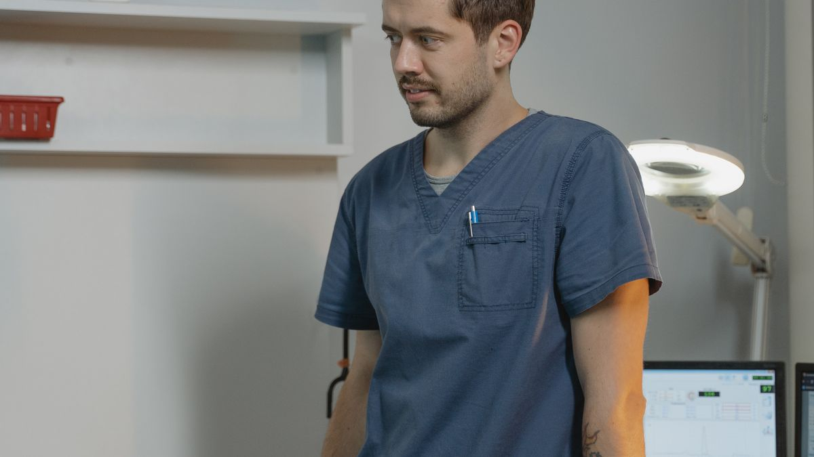
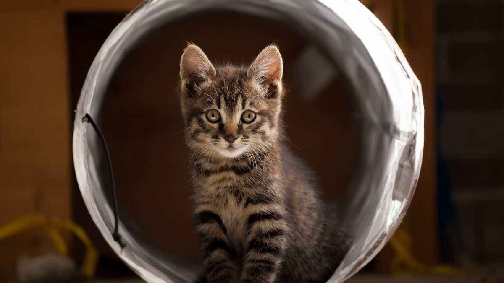

우선순위가 높은 항목
매일 손이 가는 것부터 준비하면 낭비가 줄어듭니다. 스테인리스 식기 2개(5천~1만 원), 배변 패드 M사이즈 1팩(1만 원대), 기본 하네스·리드 세트(1~2만 원), 60×45cm 매트(1만 원), 이동장(2~4만 원)이 입문 5종입니다.

고양이 가정은 화장실 1개(1~3만 원)와 벤토나이트 모래 6L(5천~8천 원)를 추가합니다. 이 정도면 첫 14일은 무리 없이 버틸 수 있습니다.
나중에 사도 되는 항목
자동 급식기(3~15만 원), 의류, 대형 캣타워(10만 원 이상), GPS 목걸이 등은 생활 패턴이 2~4주 잡힌 뒤 필요성을 판단해도 늦지 않습니다. 입문 단계에서 20만 원 넘게 쓰고 30%를 서랍에 넣어 두는 경우를 자주 봅니다.
특히 자동 급식기는 출장이 월 3회 이상일 때 의미가 큽니다. 재택·규칙적 급여가 가능하면 수동 그릇으로 6개월 이상 충분한 가정도 많습니다.
고를 때 보면 좋은 기준
인기 순위보다 세척·교체·보관이 쉬운지를 먼저 봅니다. 식기는 식기세척기 가능 여부, 패드는 흡수량(ml) 표기, 하네스는 가슴 둘레 cm 조절 범위를 확인하세요.

향이 강한 세제·탈취제(1L 8천 원대)는 호흡기에 민감한 개체에게 부담일 수 있어, 무향 또는 저자극 제품(500ml 5천 원대)을 우선 고려합니다.
첫 달 예산 나누기
필수 5~8만 원 + 사료 2~4만 원 + 예비비 2만 원 = 첫 달 10~14만 원이 현실적인 범위입니다. 검진·중성화는 별도로 5~30만 원을 감안하세요.

- 1주 차: 식기·패드·이동장
- 2주 차: 하네스 핏 확인 후 교체 여부 결정
- 3~4주 차: 그루밍 도구·장난감 2~3개 추가
실전 적용 노트
용품은 '한 번에 완비'보다 '2주 써 보고 하나 추가'가 낭비가 적습니다. 매일 쓰는 식기·배변·이동·휴식 4종만 먼저 확보하고, 고가 장비는 패턴이 보인 뒤에도 늦지 않습니다.
리뷰 50개를 본 뒤 장바구니에 15개를 담았다가, 실제로 매일 쓰는 건 6개뿐인 집을 자주 봅니다. 서랍이 비어 있어도 괜찮습니다.
사이즈는 개체 예상 체중보다 '지금 몸에 맞는지'가 먼저입니다. 하네스·이동장·침대는 성장·체형 변화에 맞춰 3개월마다 핏을 재는 편이 좋습니다.
향이 강한 세제·탈취제는 피부·호흡 자극을 키울 수 있습니다. 펫 전용 또는 무향에 가까운 제품부터 시작하세요.
용품 교체는 한 번에 여러 개를 바꾸지 않습니다. 사료·간식·배변 패드 위치까지 동시에 바꾸면, 불편 원인을 찾기 어렵습니다.
중고 거래 시 소독·세척 후 2일 환기를 기본으로 합니다. 담요·매트는 세탁 가능 여부를 먼저 확인하세요.
식기는 미끄럼 방지 받침과 넓은 입구가 청소 부담을 줄입니다. 플라스틱 그릇은 기름때가 남기 쉬워 세라믹·스테인리스를 많이 씁니다.
이동장은 차량·병원·비상 대피에 공용으로 쓰일 수 있게 하나만 튼튼하게 준비하세요. 집 안에서는 문을 열어 둔 '동굴'로 쓰는 집도 있습니다.
첫 달 쇼핑은 '필수 6종 리스트'를 냉장고에 붙이고, 그 외는 2주 후 한 번에 검토하는 방식이 지출을 안정시킵니다.
이번 주 점검 체크리스트입니다. 전부가 아니어도 괜찮고, 하나씩만 체크해 보세요.
- 식기·물그릇이 미끄럼 없이 고정되어 있는지 확인했습니다.
- 이동장·하네스가 지금 체형에 맞는지 3분 안에 착용 테스트했습니다.
- 배변용품(패드·모래·봉투)이 1주 분량 이상 남아 있습니다.
- 향 강한 세제·탈취제 대신 무향·펫 전용 제품을 쓰고 있습니다.
- 매일 쓰는 용품 6종 리스트를 적어 두었고, 그 외는 보류 중입니다.
- 중고·선물 받은 담요는 세탁·건조 후 사용했습니다.
- 사료·간식 개봉일 스티커를 붙였습니다.
- 응급용 물·간식·병원 연락처가 서랍 한 칸에 모여 있습니다.
용품은 늘리기보다 '매일 쓰는 것만 손이 가게' 정리하는 편이 오래 갑니다.
실전 노트는 하루에 전부 적용하기보다, 체크리스트 3개만 골라 2주 반복하는 방식이 오래 갑니다. 잘 되는 항목만 남기고 나머지는 과감히 빼도 괜찮습니다.
마무리로, 이번 주에는 체크리스트 3개만 골라 2주 반복해 보세요. 작은 성공이 쌓이면 나머지는 자연스럽게 늘어납니다.
기록이 쌓이면 병원·상담 때 설명이 쉬워집니다. 한 줄 메모라도 같은 항목으로 이어 쓰는 것이 핵심입니다.
완벽한 루틴보다 80% 지켜지는 루틴이 오래 갑니다. 안 된 날은 원인 한 줄만 적고 다음 주에 조정하세요.
오늘 당장 하나만 고른다면, 체크리스트 맨 위 항목부터 시작해 보세요. 나머지는 다음 주로 미뤄도 괜찮습니다.
가족이 함께 돌본다면, 누가 했는지 체크박스 한 칸만 추가해도 누락·중복이 줄어듭니다.
정리하며
용품 리뷰 50개를 본 뒤 장바구니에 15개를 담았다가, 실제로 매일 쓰는 건 6개뿐인 집을 여러 번 봤습니다.
저는 '일단 사서 맞춰 보기'보다 '2주 써 보고 하나 추가하기' 쪽이 지갑과 서랍 모두에 낫다고 봅니다. 비어 있는 서랍이 나쁜 게 아닙니다.
서랍이 비어 있어도 괜찮습니다. 2주 써 본 뒤 하나씩 추가하는 편이 낭비가 적습니다.
초보자가 자주 실수하는 포인트
- 리뷰 인기만 보고 사이즈·세척성 미확인
- 향 강한 세제·탈취제를 필수품과 함께 구매
- 사료 10kg 대용량을 개봉 전에 구매
- 하네스를 온라인 사이즈표만 보고 주문
- 자동급식기를 입양 전날 설치
체크리스트
- 스테인리스 식기 2개 준비
- 배변·화장실 용품 준비
- 하네스·리드 매장 핏 테스트
- 60×45cm 휴식 매트 마련
- 세척·건조 공간(싱크대 옆) 확보
자주 묻는 질문
- 자동 급식기는 필수인가요?
- 출장이 잦지 않다면 수동 급여로 충분한 경우가 많습니다. 월 3회 이상 장기 외출일 때 우선 검토하세요.
이 글은 초보자 기준으로 이해하기 쉽게 정리되었으며, 내용은 운영 과정에서 순차적으로 보완될 수 있습니다. 수의사 등 전문가의 진단·처치를 대체하지 않습니다.